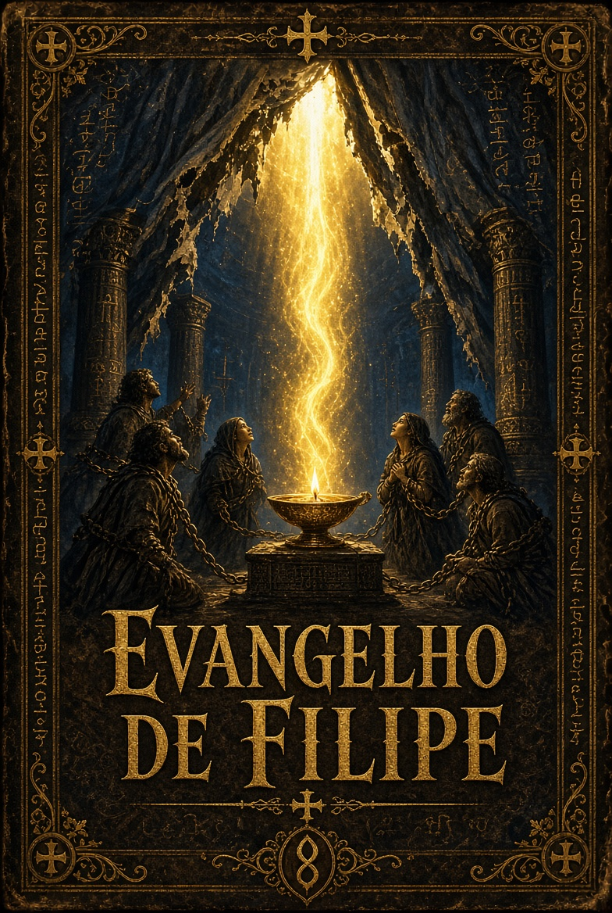

“Se alguém se torna filho da câmara nupcial, receberá a luz.”
Nag Hammadi Codex II, 3
Os Sete Véus
Coletânea de Evangelhos e Apocalipses Apócrifos
O Evangelho de Filipe é um dos textos mais significativos da Biblioteca de Nag Hammadi, descoberta em dezembro de 1945 por camponeses egípcios perto da cidade de Nag Hammadi, no Alto Egito. O manuscrito faz parte do Códice II, Tratado 3, ocupando as páginas 51 a 86 do códice. Trata-se do único exemplar conhecido deste escrito.1
O códice foi escrito em copta (dialeto saídico) no século IV, provavelmente por volta de 350 d.C. O texto original, porém, foi composto em grego, e a maioria dos estudiosos o situa entre meados do século II e o início do século III. Não se conhece nenhum fragmento grego, o que torna o manuscrito de Nag Hammadi a única testemunha do escrito.
Diferente dos evangelhos canônicos e mesmo do Evangelho de Tomé (que também está no mesmo códice), o Evangelho de Filipe não é uma narrativa da vida de Jesus nem uma simples coleção de ditos. É uma compilação de reflexões teológicas, sacramentais e simbólicas de caráter valentiniano. Seu foco principal está nos mistérios cristãos — especialmente o batismo, o crisma, a eucaristia e a câmara nupcial — e na ideia de restauração da unidade original entre os opostos.2
O nome “Filipe” aparece apenas uma vez no texto, e a atribuição ao apóstolo é tradicional, não histórica. O escrito revela a espiritualidade de grupos gnósticos cristãos que valorizavam o conhecimento (gnose) e a experiência sacramental como caminho de retorno à plenitude.
Relação com outros textos de Nag Hammadi
O Evangelho de Filipe está no mesmo Códice II que o Evangelho de Tomé, logo após ele. Enquanto o Evangelho de Tomé é uma coleção de ditos de Jesus, o Evangelho de Filipe é mais meditativo e sacramental. Alguns ditos do Evangelho de Tomé encontram ecos em Filipe, especialmente no que diz respeito ao autoconhecimento e à união interior.
Também no Códice II encontram-se o Apócrifo de João, a Hipóstase dos Arcontes e o Tratado sobre a Origem do Mundo. Estes textos fornecem o pano de fundo mitológico sobre a criação, a queda e os arcontes, enquanto Filipe se concentra mais na resposta sacramental e na restauração através dos mistérios.3
O tema da câmara nupcial, central em Filipe, aparece de forma relacionada na Exegese sobre a Alma (também no Códice II). Já o Evangelho da Verdade (Códice I) compartilha com Filipe a ênfase no conhecimento como libertação.
1 O Códice II de Nag Hammadi é um dos melhor preservados da coleção e contém sete tratados.
2 A câmara nupcial é o mistério mais elevado no sistema valentiniano, representando a união da alma com sua contraparte celestial.
3 O Apócrifo de João apresenta a cosmologia setiana mais completa; Filipe dialoga com essa tradição de forma sacramental.
Um hebreu faz outro hebreu, e essa pessoa é chamada “prosélito”. Mas um prosélito não faz outro prosélito. O escravo busca apenas ser livre, mas não espera adquirir a herança de seu senhor. Mas o filho não é apenas um filho, mas reivindica a herança do pai.4
Aqueles que herdam os mortos estão eles mesmos mortos. Aqueles que herdam os vivos estão vivos. Quando éramos hebreus, éramos órfãos e tínhamos apenas nossa mãe, mas quando nos tornamos cristãos, tínhamos tanto pai quanto mãe.
4 A metáfora do filho e do escravo ecoa Gálatas 4 e a distinção entre herança e servidão.
Aqueles que semeiam no inverno colhem no verão. O inverno é o mundo, o verão o outro Éon. Cristo veio para resgatar alguns, para salvar outros, para redimir outros. Redimiu tanto as pessoas boas quanto as más no mundo.
Luz e trevas, vida e morte, direita e esquerda, são irmãos uns dos outros. São inseparáveis. Aqueles que estão elevados acima do mundo são indissolúveis, eternos.
Os nomes dados aos mundanos são muito enganosos. Um único nome não é pronunciado no mundo: o nome que o Pai deu ao Filho. É o nome do Pai.5
Os governantes quiseram enganar o homem, pois viram que ele tinha parentesco com aqueles que são verdadeiramente bons. Antes de Cristo vir, não havia pão no mundo. Quando Cristo veio, o homem perfeito, trouxe pão do céu.
5 O tema dos nomes verdadeiros versus nomes enganosos é central na tradição gnóstica e aparece também no Evangelho de Tomé.
Alguns disseram: “Maria concebeu pelo Espírito Santo”. Estão em erro. Maria é a virgem a quem nenhum poder contaminou.
“Jesus” é um nome oculto, “Cristo” é um nome revelado. “O Nazareno” é aquele que revela o que está oculto. Cristo tem tudo em si mesmo, seja homem, ou anjo, ou mistério, e o Pai.
Aqueles que dizem que o Senhor morreu primeiro e depois ressuscitou estão em erro, pois ele ressuscitou primeiro e depois morreu. “Carne e sangue não herdarão o reino de Deus”. Qual é a sua carne? É a Palavra, e o seu sangue é o Espírito Santo.6
É necessário ressuscitar nesta carne, pois tudo existe nela. No Reino dos Céus, as roupas são melhores do que aqueles que as vestem.
6 A interpretação espiritual de João 6:53 é típica dos textos valentinianos.
Jesus não apareceu como era, mas da maneira pela qual seriam capazes de vê-lo. Apareceu aos grandes como grande, aos pequenos como pequeno, aos anjos como anjo e aos homens como homem. Quando apareceu aos seus discípulos em glória no monte, fez os discípulos grandes para que pudessem vê-lo.
Havia três que sempre caminhavam com o Senhor: Maria, sua mãe, e sua irmã, e Madalena, aquela que era chamada sua companheira.7
7 A menção às três Marias e à Madalena como companheira é um dos trechos mais comentados do texto.
Deus é um tintureiro. Como seus corantes são imortais, aqueles a quem Deus tingiu tornam-se imortais. Echamoth é Sabedoria simplesmente, mas Echmoth é a Sabedoria da morte.8
8 Echamoth / Echmoth reflete a distinção valentiniana entre a Sophia superior e a Sophia inferior (Achamoth).
O Senhor fez tudo em mistério: um batismo, um crisma, uma Eucaristia, uma redenção, uma câmara nupcial. Aqueles que foram batizados na morte não são mais cristãos, mas um Cristo.9
A câmara nupcial não é para os animais nem para os escravos nem para as mulheres contaminadas, mas é para os homens livres e as virgens.
Se a fêmea não tivesse sido separada do macho, não teria morrido com o macho. Sua separação foi o começo da morte. Por isso Cristo veio para reparar a separação, unindo os dois novamente.
9 Os cinco mistérios (batismo, crisma, eucaristia, redenção e câmara nupcial) estruturam a iniciação valentiniana.
O véu do templo foi rasgado de cima a baixo, porque era necessário que alguns de baixo subissem para cima. Os poderes não podem ver aqueles que vestiram a luz perfeita.10
Se alguém se torna filho da câmara nupcial, receberá a luz. Quem receber aquela luz não será visto nem preso.
10 A interpretação do véu rasgado (Mateus 27:51) como acesso à câmara nupcial é característica deste evangelho.
Enquanto está oculto, o mal está inativo. Mas sempre que é revelado, então a luz perfeita fluirá sobre todos, e todos os que estão nela receberão o crisma. Então os escravos serão libertos e os cativos serão redimidos.
Quem entrar na câmara acenderá a sua lâmpada. Os mistérios deste casamento se cumprem no dia e na luz. Nem aquele dia nem a sua luz jamais se põem.
Os Sete Véus
Coletânea de Evangelhos e Apocalipses Apócrifos
Evangelho de Judas
Evangelho de Filipe
Evangelho de Pedro
Apócrifo de João
Pistis Sophia
Evangelho dos Egípcios
Apocalipse de Pedro
1gilio L. J.